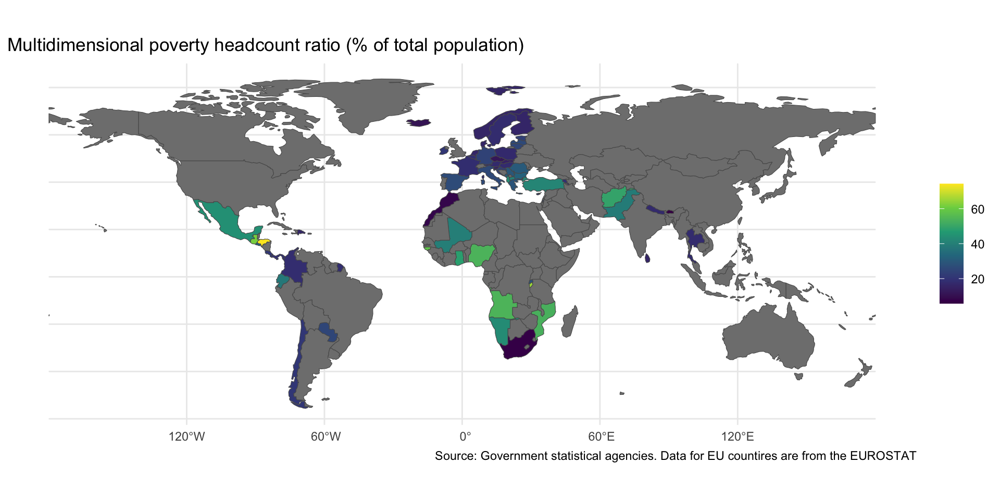

Lecture 6.2
Democracy and Redistribution
Definitions
- Poverty–a lack of money, material possessions or means
- Income-based approach (World Bank)
- Capabilities approach (Amartya Sen)
- Inequality–the unequal distribution of wealth and opportunity in a society
Measuring Poverty
- “Headcount ratio”
- Percentage of population below a poverty line
- Associated with income-based approach
- Multidimensional poverty index
- Associated with capabilities approach
- Measures “intensity” of poverty, not just frequency
- Incorporates health care, education and living standards
Extreme, Moderate and Relative Poverty (Sachs)
- Extreme poverty or “absolute poverty”
- Cannot meet basic survival needs
- Moderate poverty
- Basic needs are just barely met
- Relative poverty
- Lack access to tools for upward social mobility
- Applies mainly to high income countries (Sachs 2005)
Poverty Lines ($ per day 2021 PPP)
- Extreme poverty: $3.00
- LMIC threshold: $4.20
- UMIC threshold: $8.30
Regional Trends in Extreme Poverty
UMIC Threshold

Global Trends at Different Thresholds

Multidimensional Poverty

U.S. Extreme Poverty
- Angus Deaton
- Life expectancy of poorest Americans less than Bangladesh or Vietnam
- Health indicators declining, not getting better
Discussion
- Go to Gapminder Dollar Street
- Pick a family
- Where do they fall on the poverty scale?
- Extreme
- Moderate
- Relative
- Not poor
- What would be the biggest challenge of living like that family?
Key Concepts
- ISI (Import substitution industrialization)
- Formal and informal sector workers
- Contributory benefits, e.g. traditional pensions
- Noncontributory benefits
- CCT (conditional cash transfer)
- NCP (non-contributory pensions)
Holland and Schneider
- What is easy vs. hard redistribution?
- What do they want to explain?
- Competing explanations
- Electoral competition
- Deindustrialization
- Partisan ideology
- What is their explanation?
- Come up with one good question about the reading